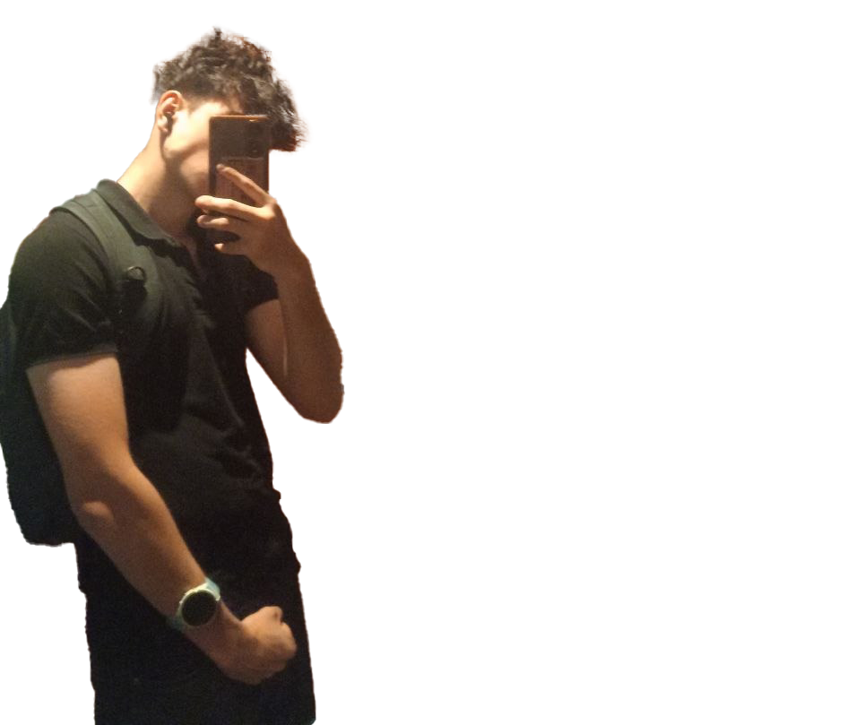
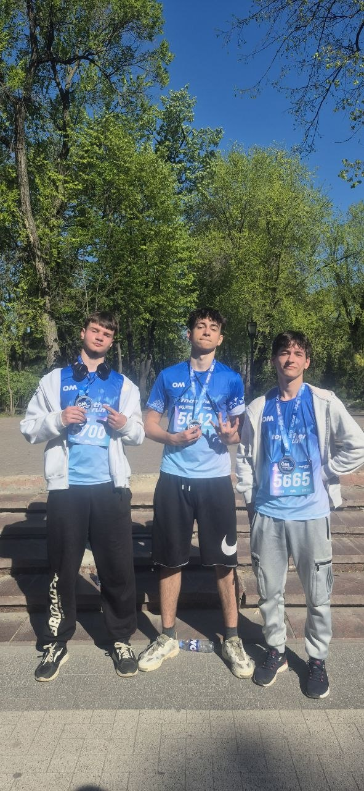
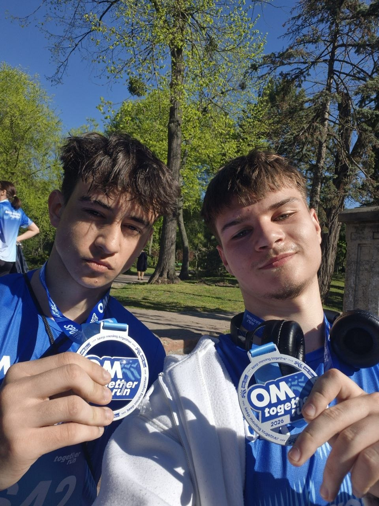
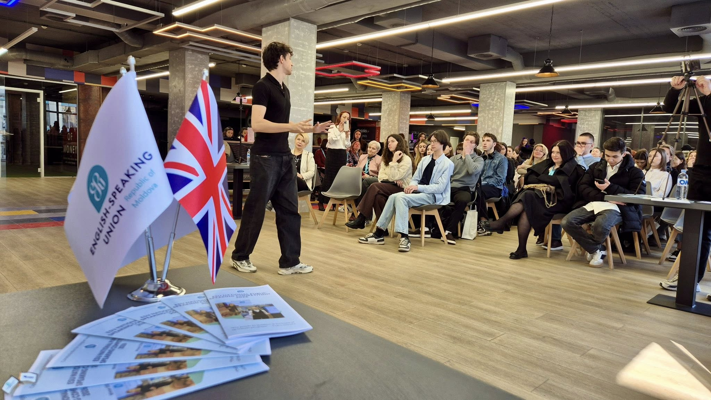
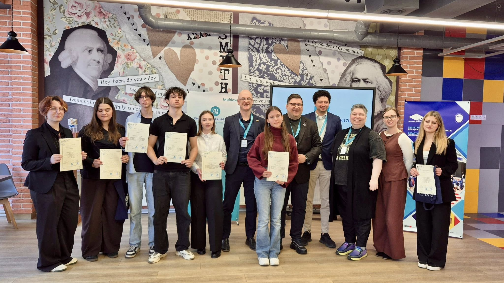
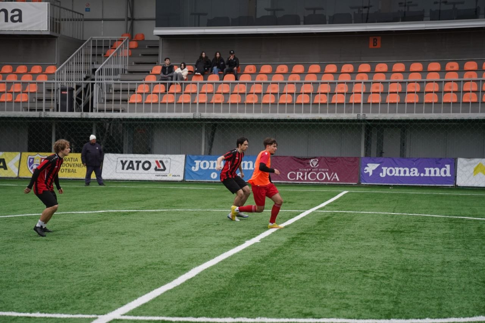
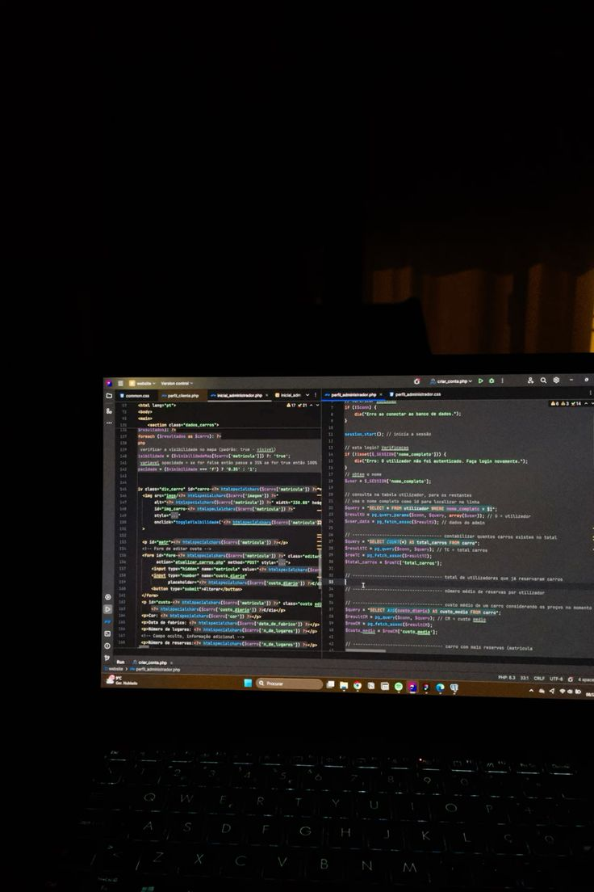
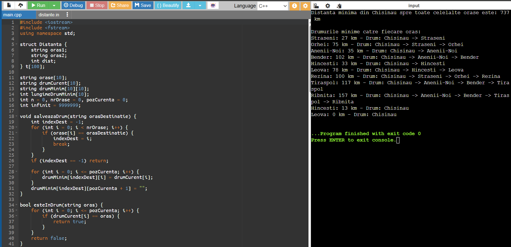
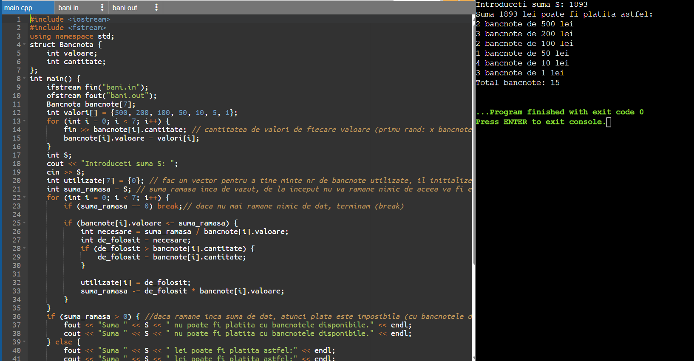
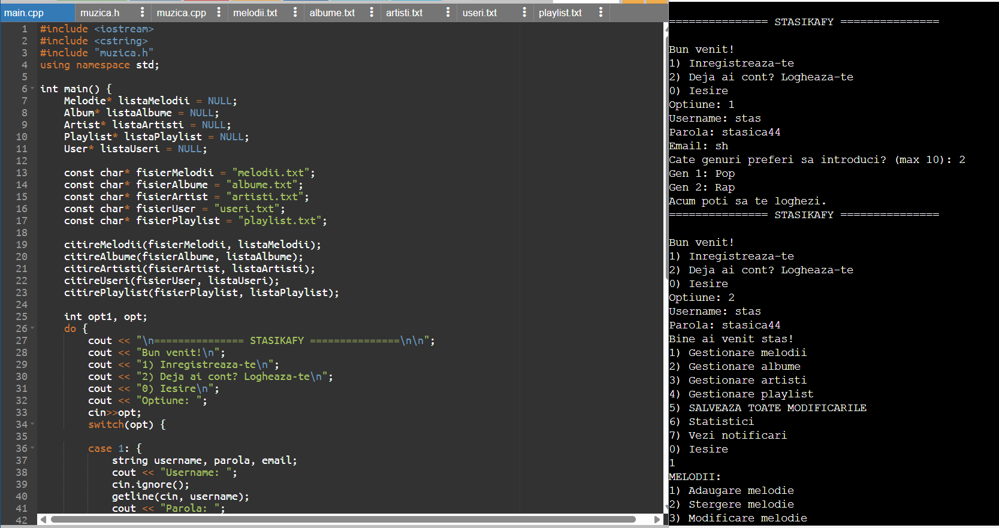

Activitatile mele →
.png)

Bazat in Republica Moldova, sunt dezvoltator web si OOP si designer grafic.
Ca dezvoltator, ofer soluții pentru toate tipurile de probleme, abordând fiecare proiect cu
seriozitate, profesionalism și atenție la detalii. Fiecare lucrare este realizată conform cerințelor și
specificațiilor clientului, punând accent pe calitate, eficiență și rezultate moderne.
De asemenea, ofer servicii de design grafic, creând materiale vizuale atractive și profesionale:
logo-uri, bannere, postări pentru social media, identitate vizuală și alte elemente grafice adaptate
nevoilor fiecărui proiect. Îmbin creativitatea cu funcționalitatea pentru a livra soluții complete și
personalizate.
Design Grafic
Dezvoltare POO
UI/UX Specialist
Public Speaking
Fotbal SemiPro
de experienta totala
proiecte lucrate
clienti multumiti
Aici se vor afișa activitățile mele, împreună cu diplomele și toate certificatele obținute pe parcursul formării mele academice și profesionale. Această secțiune este dedicată prezentării totului ce este pa flotski.

Am participat la competiția de alergare Half Marathon by OM 2026, unde am parcurs cu succes proba de semimaraton, demonstrând disciplină, perseverență și rezistență fizică. Participarea la acest eveniment a reprezentat rezultatul unui proces constant de pregătire și dezvoltare personală, implicând antrenamente regulate și stabilirea unor obiective clare.


Al treilea cel mai bun Public Speaker la National Public Speaking Competition 2026 – organizat de ESU Moldova. Pe data de 14 martie 2026, am participat la concursul de vorbire publica. Am reprezentat colegiul cu discursul meu "One Question that Shook an Empire"
Prin prezentarea discursului meu, am explorat impactul pe care o singură întrebare îl poate avea asupra cursului istoriei și asupra structurilor de putere. Evoluția ideilor, claritatea mesajului și tehnicile de prezentare utilizate mi-au adus recunoașterea juriului și clasarea pe locul III.

anc

Am participat in Edge Football League, fiind la echipa FC Autentic, obtinand locul 4 in liga. Am jucat pe pozitia fundas lateral si atacant lateral. Am demostrat competitie si perspicacitate, ducand la rezultate favorabile. Am lucrat in echipa si individual pentru a obtine ce avem in curent. Asteptam uramtorul sezon pentru inceperea unui nou sezon.

Sunt dezvoltator POO, pasionat de crearea aplicațiilor eficiente și bine structurate. Îmi place să rezolv probleme prin cod și să construiesc soluții folosind principiile programării orientate pe obiecte, precum încapsularea, moștenirea și polimorfismul. Sunt mereu deschis să învăț tehnologii noi și să-mi dezvolt abilitățile în domeniul software.mi place să analizez cerințele unui proiect și să transform ideile în aplicații funcționale, optimizate și intuitive pentru utilizatori. Acord atenție atât logicii din spatele aplicației, cât și organizării codului, pentru a asigura dezvoltarea și întreținerea facilă pe termen lung.
Aici se vor afișa lucrarile mele, împreună cu diplomele și toate certificatele obținute pe parcursul formării mele academice și profesionale.



In aplicatia data C++ am dezvoltat un program care determina distanta dintre orasele Moldovei catre capitala Chisinau. Datele sunt preluate din fisier, iar programul calculeaza cel mai eficient drum spre toate orasele folosind algoritmul Djikstra. La fel, programul determina prin noduri drumul parcurs, nu numai Chisinau si destinatia dorita, dar si trecerea prin alte localitati de-a lungul drumului.

In aplicatia data C++ am dezvoltat un program care calculeaza optim bancnotele de 500, 200, 100, 50, 10, 5, 1 pentru impartirea la o suma data S. Avem un set anumit de bancnote, de la start din bani.in, pe fiecare rand este pus numarul de bancnote(Primul rand - nr. de bancnote de 500, al doilea - 200, etc.). Programul la fel tine minte numarul de bancnote folosite in total pentru platirea sumii.

In aplicatia data C++ am dezvoltat un program de streaming a muzicii. Am adaugat 5 genuri de muzica, impreuna cu 10 piese deja integrate intr-un fisier extern. Programul este foarte dezvoltat, foloseste noduri si header, fisiere pentru 5 categorii, meniu, schimbare, salvare, stergere, afisare, adaugare, sistem de utilizatori, statistici si recomandari. Integrat cu 2 programe cpp si un header.
Aici se vor afișa recenziile clientilor mei fideli.
„Am fost impresionat de calitatea acestui proiect încă de la prima interacțiune. Designul este modern, bine echilibrat și oferă o experiență plăcută utilizatorului. Fiecare element pare atent gândit, de la alegerea culorilor și a tipografiei până la organizarea conținutului. În plus, proiectul demonstrează o bună înțelegere a principiilor de design și a nevoilor utilizatorilor.”
Efros
„Mi-a plăcut foarte mult abordarea folosită în realizarea acestui proiect. Pe lângă aspectul vizual atractiv, soluția oferă și o funcționalitate bine implementată. Navigarea este fluidă, iar toate componentele par să funcționeze armonios împreună. Se observă o preocupare pentru experiența utilizatorului și pentru calitatea rezultatului final."
Daniel
„Una dintre cele mai importante calități ale acestui proiect este organizarea. Atât partea vizuală, cât și cea tehnică sunt realizate într-un mod coerent și bine structurat. Codul este curat și ușor de urmărit, ceea ce facilitează mentenanța și dezvoltarea ulterioară. Din punct de vedere al designului, proiectul oferă o identitate vizuală clară și o prezentare foarte plăcută."
Mahmadajan